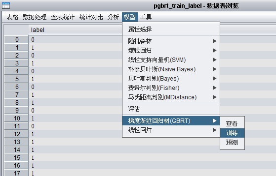
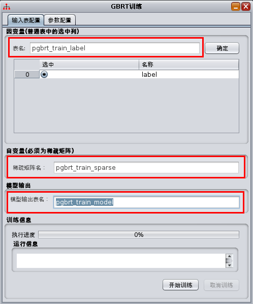
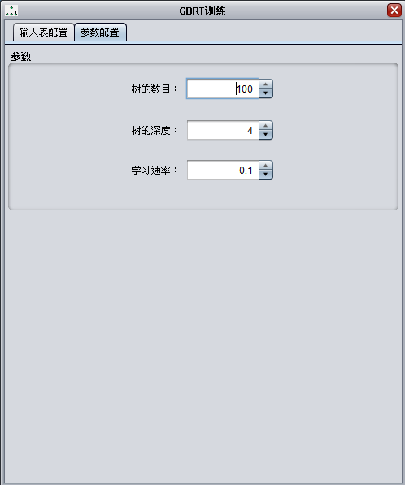
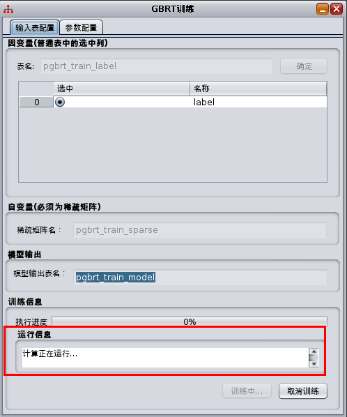
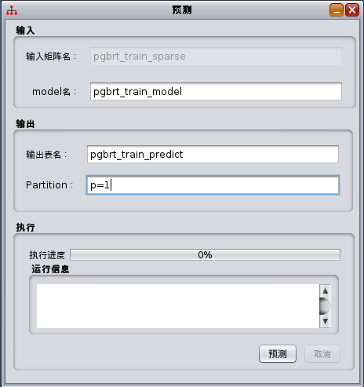
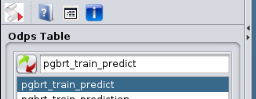

回归分析¶
回归分析(Regression Analysis)是一种统计学上分析数据的方法，目的在于了解两个或多个变量间是否相关、相关方向与强度，并建立数学模型以便观察特定变量来预测研究者感兴趣的变量。回归分析是建立因变量Y(或称依变量，反应变量)与自变量X(或称独变量，解释变量)之间关系的模型。简单线性回归使用一个自变量X，复回归使用超过一个自变量(X_1, X_2 ... X_i)。详细介绍见： Regression analysis 。在Xlab中，回归分析主要支持两种： 线性回归 和 梯度渐近回归树 。
线性回归¶
线性回归(Linear Regression)是利用称为线性回归方程的最小二乘函数对一个或多个自变量和因变量之间关系进行建模的一种回归分析。这种函数是一个或多个称为回归系数的模型参数的线性组合。只有一个自变量的情况称为简单回归，大于一个自变量情况的叫做多元回归。
线性回归是回归分析中第一种经过严格研究并在实际应用中广泛使用的类型。这是因为线性依赖于其未知参数的模型比非线性依赖于其位置参数的模型更容易拟合，而且产生的估计的统计特性也更容易确定。详细介绍见： Linear regression 。
在XLab中，对于线性回归模型，提供两种执行方式：函数和界面，主要包括两个过程：训练和预测。
函数¶
线性回归包括以下几个函数：train，predict，loadModel和isModel。这几个函数具体使用方法，可用help命令查看，示例：
help(Regression.LinearReg.train)
help(Regression.LinearReg.predict)
help(Regression.LinearReg.loadModel)
help(Regression.LinearReg.isModel)
训练¶
def train(independentColNames, dependentColName, inputTableName = None,
inputPartitions = None, srt = None, outModelTableName = None):
参数：
- independentColNames: 自变量列名列表(x).
- dependentColName: 因变量列名(y).
- inputTableName: (可选)输入表名.
- inputPartitions：(可选)输入表的分区.
- srt: (可选)inputTableName和inputPartitions下的SummaryResultTable.
- outModelTableName: (可选)输出模型表的名字.
返回：
- LinearRegressionModel
示例：
linearRegressionModel = Regression.LinearReg.train(["balance"], "age", "bank_marketing")
预测¶
def predict(inputTableName, model, outputTableName,
appendColNames = None, inputPartitions = None):
参数：
- inputTableName: 输入预测表.
- model: 线性回归模型.
- outputTableName: 输出表.
- appendColNames：(可选)追加列列表
- inputPartitions: (可选)输入表的分区列表.
示例：
Regression.LinearReg.predict("bank_marketing", model, "outTableName",
appendColNames=["age","balance"])
加载模型¶
def loadModel(modelTableName):
参数：
- modelTableName: 模型表
返回：
- LinearRegressionModel
示例：
linearRegressionModel = Regression.LinearReg.loadModel("modelTableName")
判断模型¶
def isModel(modelTableName):
参数：
- modelTableName: 模型表
返回：
- 布尔值，true：是线性回归模型，false：不是线性回归模型
示例：
linearRegressionModel = Regression.LinearReg.isModel("modelTableName")
梯度渐近回归树¶
梯度渐近回归树算法介绍：Gradient boosting算法介绍 。XLab使用了 pGBRT: Parallel Gradient Boosted Regression Trees 算法。本算法目前支持Gradient boosting regression tree. 也就是只支持回归。使用的损失函数只支持最小二乘。
在XLab中，对于梯度渐近回归树模型，提供两种执行方式：函数和界面，主要包括两个过程：训练和预测。
函数¶
GBRT包括以下几个函数：trainSparse，predictSparse，loadModel和isModel。
这几个函数具体使用方法，可用help命令查看，示例：
help(Regression.GradBoostRegTree.trainSparse)
help(Regression.GradBoostRegTree.predictSparse)
help(Regression.LinearReg.loadModel)
help(Regression.LinearReg.isModel)
训练¶
def trainSparse(independentMatrixName, dependentTableName, dependentColName,
modelTableName, dependentPartitions = None, treeDepth = 5,
treesNum = 100, learningRate = 0.1) :
- 参数：
- independentMatrixName: 输入的自变量(x)矩阵。
- dependentTableName: 输入的因变量(y)表名。
- dependentColName: 因变量的列名。
- modelTableName: 输出的模型名。
- dependentPartitions: (可选)因变量表对应的输入矩阵。选择全表则为None。默认为选择全表。
- treeDepth: (可选)单颗树的最大深度。默认为5.
- treesNum: (可选)树的棵数。默认为100.
- learningRate: (可选)学习速率。默认为0.1.
- 返回：
- 返回GradBoostRegTreeModel类型，表示梯度渐近回归树模型。
示例：
Regression.GradBoostRegTree.trainSparse("gbrt_train_sparse", "gbrt_train_dependent_table",
"dependent", "gbrt_model", dependentPartitions = ["p=1"], treeDepth = 5,
treesNum = 100, learningRate = 0.1)
- 注意事项：
- 本方法实现了梯度渐近回归树的训练过程。
- 对于因变量y，只支持double和bigint类型
- 自变量只支持 Xlib稀疏矩阵表 输入
预测¶
def predictSparse(inputMatrixName, model, outputTableName, outputPartition = None) :
- 参数：
- inputMatrixName: 预测输入矩阵名。
- model: GradBoostRegTreeModel类型。梯度渐近回归树模型。
- outputTableName: 预测输出表。
- outputPartition:(可选)指定输出到输出表的分区。None表示无分区。默认为无分区。
示例：
gbrtModel = Regression.GradBoostRegTree.trainSparse("gbrt_train_sparse",
"gbrt_train_dependent_table", "dependent", "gbrt_model",
dependentPartitions = ["p=1"], treeDepth = 5, treesNum = 100, learningRate = 0.1)
Regression.GradBoostRegTree.predictSparse("gbrt_train_sparse", gbrtModel,
"gbrt_prediction", outputPartition = "p=1")
- 注意事项：
- 本方法实现了梯度渐近回归树的预测过程。
加载模型¶
def loadModel(modelTableName):
- 参数：
- modelTableName: 模型表名。
- 返回：
- GradBoostRegTreeModel: 梯度渐近回归树模型
示例：
gbrtModel = Regression.GradBoostRegTree.loadModel("table_name")
判断模型¶
def isModel(modelTableName) :
- 参数：
- modelTableName: 检查的模型表名。
- 返回：
- Boolean: 是否为梯度渐近回归树模型。
示例：
if Regression.GradBoostRegTree.isModel("table_name") :
print "gbrt model."
界面¶
在本例子中使用pgbrt_train_label表的label列作为因变量，使用稀疏矩阵pgbrt_train_sparse作为自变量，pgbrt_train_model_d5作为模型输出。使用步骤如下：
打开pgbrt_train_label表，在菜单->模型->梯度渐近回归树，打开模型相关功能：
{kind=link}
训练¶
在训练界面中的参数输入是和函数中的参数相对应的，参见训练.
打开训练界面为：
{kind=link}
在本界面中：
- 第一个红色方框中代表因变量所在的表，其中选中的行代表因变量在表中所在的列。
- 第二个红色方框中代表自变量的 Xlib稀疏矩阵表 名。
- 第三个红色方框中代表输出模型表名。
点击开始训练按钮，即开始训练。在本界面中有两个tab页，输入表配置页由上所述，参数配置页可以选择算法的参数，如下：
{kind=link}
开始训练界面如下：
{kind=link}
训练结束会弹出模型显示窗口，参见模型显示。
预测¶
在预测界面中的参数输入是和函数中的参数相对应的，参见预测 。
打开预测界面为：
{kind=link}
输入表为要预测的表，model为训练时的输出表，输出表为预测的结果。点击预测按钮，开始预测。在预测中，主界面上选择GBRT模型时，预测会自动识别这个表是否为GBRT模型。预测结束，选择预测结果表，如下图：
{kind=link}
双击打开，查看预测结果，如下图：

根据预测结果，可以调用矩阵计算计算rmse值等。rmse的计算过程如下作为参考， 在脚本中执行：
import math
before = Matrix("pgbrt_train_label", colNames = ['label'])
after = Matrix("pgbrt_train_predict", colNames = ['y_var'])
minus = after - before
norm = minus.norm('2')
row = before.rowSize()
rmse = math.sqrt(norm / float(row))
print rmse
{kind=link}